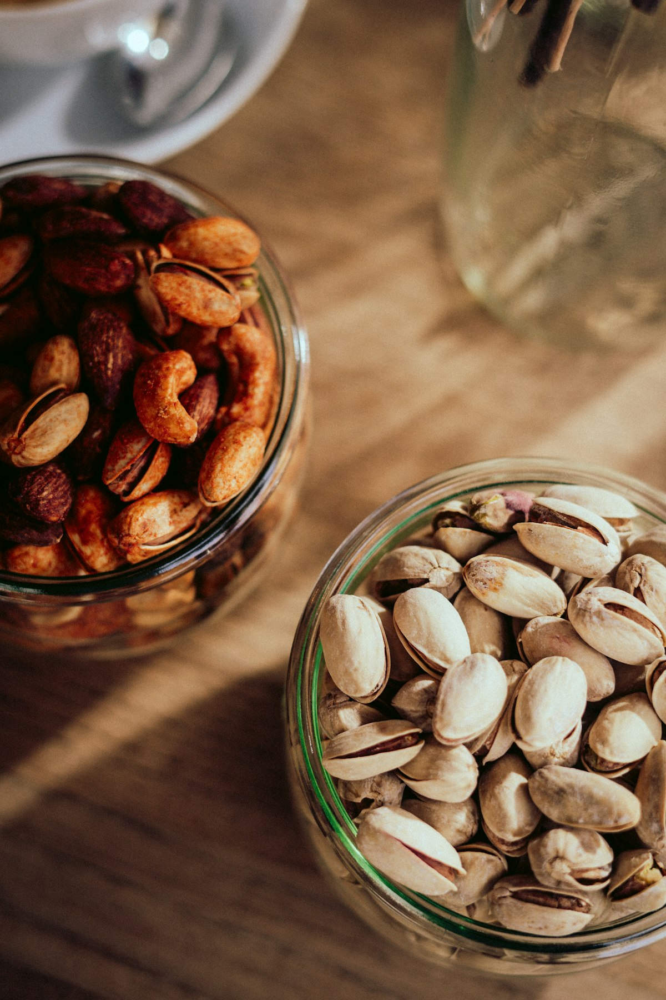
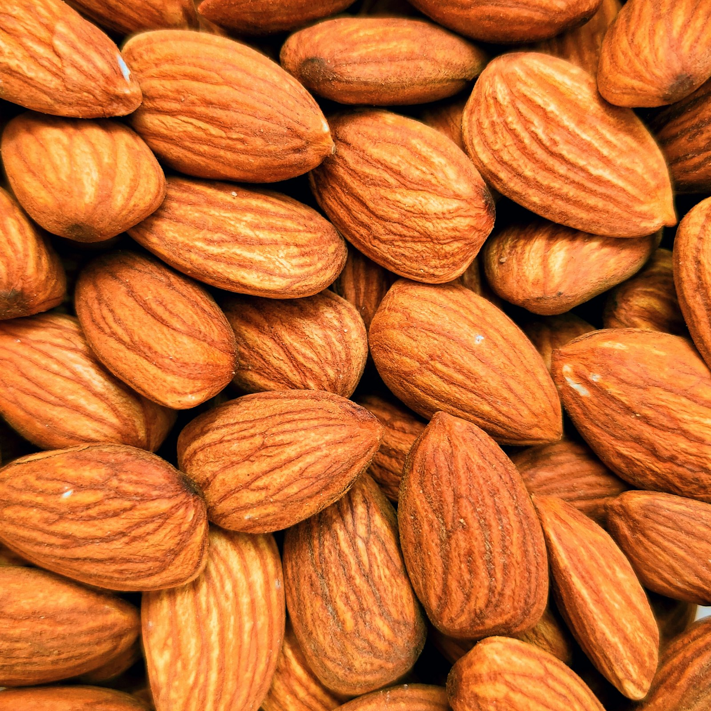

Nutrition
Discover what cashews and almonds can do for you — from everyday energy to clear answers on allergies.

Benefits of nuts
Nuts bring healthy fats, plant protein, fibre, and key minerals in a small handful. Cashews offer a creamy, mineral-rich bite; almonds deliver vitamin E and satisfying crunch — both support steady energy and everyday wellness.
- Support heart health with unsaturated fats
- Help keep you fuller between meals
- Provide magnesium, vitamin E, and plant protein
- Fit easily into snacks, salads, and cooking
Nut nutrition
per 28 g · 1 oz handful


Nutrient benefit finder
Explore how our cashews and almonds support everyday wellbeing.
Heart health
Unsaturated fats in cashews and almonds support healthy cholesterol balance as part of a varied diet — a simple handful, thoughtfully enjoyed.
Allergies
Clear answers on tree-nut allergies — tap a card to flip and read more.